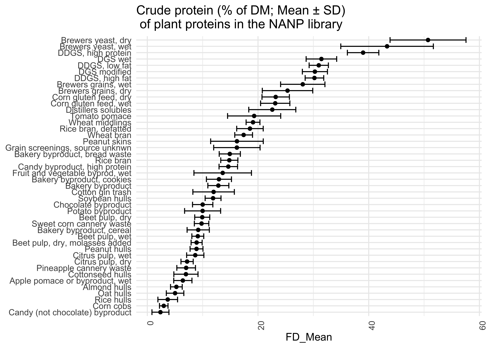

Teaching with NASEM (2021)
1
About this module
1.1
Purpose
1.2
Structure of the module and materials for teachers
1.3
Assumptions about prior knowledge
1.4
Technology requirements
1.5
Accessing the NASEM (2021) Consensus Report
1.5.1
The narrative
1.6
The NASEM-dairy-8 software
1.7
Suggested citation
1.8
Contribute to this module!
1.9
License details
2
Introduction to nutritional models
2.1
A brief history
2.2
Definition
2.3
Usefulness
2.4
Development
2.4.1
Hypothesis generation
2.4.2
Data collection through observation (or experimentation)
2.4.3
Model development
2.4.4
Model verification
2.4.5
Model refinement (re-starting the process)
2.5
Components of the NASEM (2021) model
2.5.1
Supplies, requirements, and balances
2.6
Characteristics of nutritional models
2.6.1
Factorial
2.6.2
Empirical and mechanistic elements
2.7
Nutrient requirement and supplies
2.8
Empirical, mechanistic, and hybrid models
2.9
Comparing NASEM
(2021)
to other dairy models
2.10
Conclusion
2.11
Possible additions
3
Requirements
3.1
Defining “nutrient requirement”
3.1.1
Requirement definitions in human and dairy nutrition
3.1.2
Absorbed and metabolizable amounts
3.2
Dietary reference intakes
3.2.1
Protecting against underfeeding with “safety factors”
3.2.2
Protecting against overfeeding
3.2.3
Accounting for uncertainty
3.3
Modeling nutrient requirements and supplies
3.4
Types of literature used by NASEM
(2021)
3.4.1
Measuring body composition
3.4.2
Measuring losses when intake is minimal
3.4.3
Studying symptoms of deficiency and toxicity
3.4.4
Regression on productive performance
3.5
Activities
4
Energy
4.1
Misconceptions
4.1.1
3-1
4.1.2
3-2
4.1.3
3-3
4.1.4
3-4
4.2
Reproduce with permission from Michel?
5
Protein
5.1
Starting with target milk production, predict efficiency
5.2
Opposite: starting with no info on milk, predict milk protein
5.3
CP
5.4
Kd and Kp
5.5
Visualize AA profile of milk vs. microbes. Bar chart horizontal.
5.6
AA info
5.7
Alluvial diagram
5.8
Introduction (FROM NASEM)
5.9
Background
5.9.1
Defining terms (From Michel & Marina)
5.9.2
Metabolizable protein
5.9.3
Metabolizable AA
5.10
Metabolizable Protein and AA Supply
5.10.1
Rumen-Degraded and Undegraded Protein
5.10.2
Metabolizable Protein Supply
5.10.3
Metabolizable AA Supply
5.11
Postabsorptive use of MP and AA
5.11.1
Estimation of Milk Protein Yield
5.11.2
MP and AA Recommendations
5.12
Example of breakdown of protein from n15 paper
5.12.1
Efficiency of Utilization of MP and AA
5.13
Meeting the Recommendations for MP and AA
5.13.1
Balancing for MP
5.13.2
Balancing for individual AA
5.14
Protein and dry matter intake (omit?)
5.15
Effects of protein on reproduction
6
Protein values of some feeds
7
Nutrition and the environment
7.1
Basics of nutrition and the environment
7.1.1
Environmental degradation and climate change
7.1.2
Carbon cycle
7.1.3
Could we have ZERO emissions (vs. ZERO NET emissions) and still be alive.
7.1.4
Biogeochemical cycles
7.1.5
Background
7.1.6
Why measure emissions? Why need predictions?
7.2
NASEM Nutrition and Environment
7.2.1
Methane
7.2.2
Nitrogen
7.2.3
Other environmental concerns
7.2.4
Integrated approaches
7.2.5
Minerals
7.2.6
Total manure
8
References
9
References
Contributors:
MaryGrace Erickson
Michel A. Wattiaux
Mark D. Hanigan
Marina A.C. Danes
Teaching with the narrative and model in NASEM (2021) ‘Nutrient Requirements of Dairy Cattle’
Chapter 6
Protein values of some feeds
